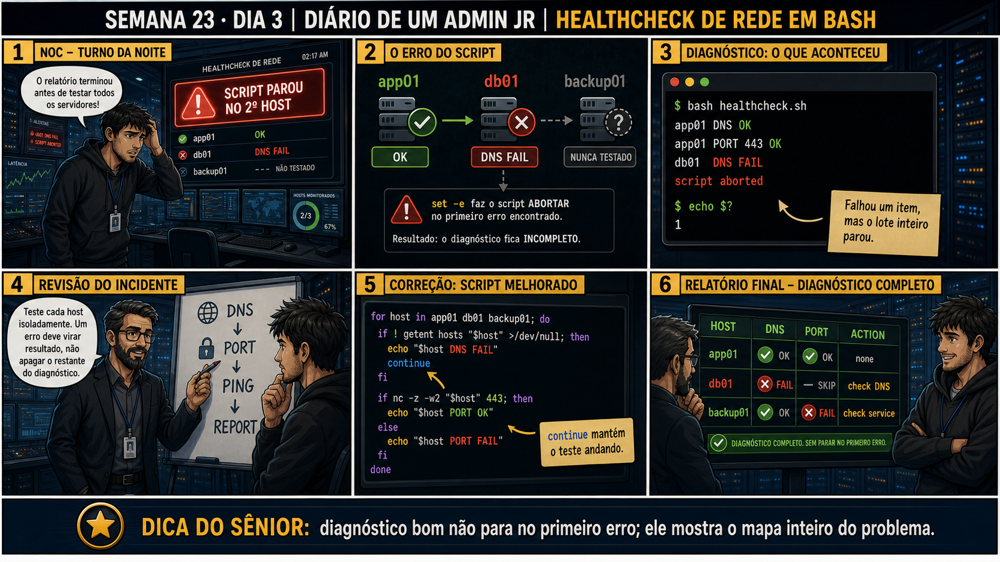

Semana 23 · Dia 3 — Consolidação | Nível Júnior — Redes
Healthcheck de Rede em Bash
um teste falhar não deveria impedir os outros de rodar e reportar também
ANTES DE ALTERAR, OBSERVE. DEPOIS DE ALTERAR, VALIDE.
1. O chamado
#2303
PRIORIDADE MÉDIA
14:00
aberto por: coordenação de infra
host: servidores de aplicação (ambiente de produção) · serviço: monitoramento preventivo
"Preciso de um script que eu possa rodar (ou colocar no cron) que checa DNS, conectividade de porta, espaço em disco e se o processo está de pé — tudo de uma vez, com um relatório claro no final."
Um script assim já existe pronto? Não. Por onde você começa a escrever?
💡 Passa o mouse nas palavras destacadas pra ver uma dica rápida — clica se quiser a explicação completa com analogia.
2. Antes de ver as opções — tenta responder
🧠 Recall ativo: por que um healthcheck que para no primeiro teste que falha é pior do que um que
roda todos e reporta cada resultado?
Se o DNS falhar e o script parar ali, você nunca vai saber se a porta, o disco e o processo também
estavam com problema — pode ser que existam TRÊS problemas simultâneos, e você só vai descobrir o
segundo depois de corrigir o primeiro e rodar tudo de novo. Um healthcheck de verdade roda cada
checagem de forma independente, guarda o resultado de cada uma, e no final mostra um relatório
completo — mesmo que várias tenham falhado ao mesmo tempo.
3. Questão comentada — clica numa alternativa
Qual estrutura de script garante que TODOS os quatro testes (DNS, porta, disco,
processo) rodem e reportem seu resultado, mesmo que algum falhe no meio do caminho?
💡 Analogia do Sênior para Fixar: O princípio fundamental de 03 HEALTHCHECK REDE BASH é como o alicerce de sustentação de um viaduto: garante que a estrutura de comunicação suporte alto tráfego sem colapsar.
4. Decodificador de conceitos
Clica em qualquer termo pra ver a definição completa e uma analogia do dia a dia:
5. Ferramentas e leitura da evidência
| Checagem | Comando usado internamente |
|---|---|
| DNS | dig +short (Semana 14) |
| Porta | nc -zv (Semana 23, Dia 1) |
| Disco | df -h (Fase 1) |
| Processo | systemctl is-active (Semana 23, Dia 2) |
#!/bin/bash
# healthcheck.sh — checagens independentes, sem && entre elas
teste_dns() {
dig +short "$1" > /dev/null 2>&1
echo $?
}
teste_porta() {
nc -zv -w3 "$1" "$2" > /dev/null 2>&1
echo $?
}
teste_disco() {
uso=$(df -h / | awk 'NR==2{print $5}' | tr -d '%')
[ "$uso" -lt 90 ] && echo 0 || echo 1
}
teste_processo() {
systemctl is-active --quiet "$1"
echo $?
}
echo "=== Healthcheck $(date) ==="
[ "$(teste_dns db-externo.empresa.com)" = "0" ] && echo "DNS: OK" || echo "DNS: FALHA"
[ "$(teste_porta 10.50.0.20 5432)" = "0" ] && echo "Porta: OK" || echo "Porta: FALHA"
[ "$(teste_disco)" = "0" ] && echo "Disco: OK" || echo "Disco: FALHA"
[ "$(teste_processo app.service)" = "0" ] && echo "Processo: OK" || echo "Processo: FALHA"
5.1 O painel 4 da prancha de hoje mostra o júnior hardcodando o IP e a porta direto dentro de cada função, em vez de passar como parâmetro
Um colega escreve teste_porta() já com o IP fixo no código, achando mais simples.
Por que passar o host e a porta como PARÂMETROS da função (em vez de fixar no
código) torna o script mais reutilizável?
💡 Analogia do Sênior para Fixar: Diagnosticar anomalias em 03 HEALTHCHECK REDE BASH é como o eletricista usando o multímetro no quadro de disjuntores: mede a passagem de sinal no ponto exato da falha.
5.2 "Se todos os testes passarem, o script precisa retornar algum código de saída específico?"
Um colega acha que o código de saída do script inteiro não importa, já que o relatório de texto já mostra tudo.
Por que o código de saída FINAL do script inteiro importa, mesmo já existindo
um relatório de texto detalhado?
💡 Analogia do Sênior para Fixar: Aplicar as boas práticas de 03 HEALTHCHECK REDE BASH é como o protocolo de segurança da aviação: elimina pontos únicos de falha e garante previsibilidade operacional.
6. Procedimento profissional
- Escreva cada checagem como uma função separada e independente.
- Passe alvos (host, porta, serviço) como parâmetros, nunca hardcoded dentro da função.
- Guarde o resultado de cada checagem, sem encadear com && entre testes diferentes.
- Monte um relatório final mostrando o resultado de TODAS as checagens, mesmo com falhas no meio.
- Defina um código de saída final coerente (0 se tudo ok, diferente de 0 se algo falhou) pra uso em cron/monitoramento.
7. Laboratório guiado — marca conforme for testando
Segurança: execute os testes apenas em VM descartável e confirme nomes de discos, hosts e arquivos antes de cada comando.
- CENÁRIOAção: Crie o arquivo healthcheck.sh de verdade na sua VM — sem o arquivo existir com permissão de execução, nem o script mais simples roda.$ cat > ~/healthcheck.sh <<'EOF' #!/bin/bash echo "=== Healthcheck $(date) ===" EOF $ ./healthcheck.sh bash: ./healthcheck.sh: Permission denied $ chmod +x ~/healthcheck.sh $ ./healthcheck.sh === Healthcheck Tue Sep 1 16:00:00 2026 ===
🔍 Detalhar esse comando
- chmod +x
- Adiciona (+) permissão de execução (x) ao arquivo — sem essa permissão, o sistema recusa rodar o script mesmo que o dono tenha permissão de leitura e escrita sobre ele.
- ~/healthcheck.sh
- O arquivo alvo — o til (~) expande automaticamente pro diretório home do usuário atual.
Resultado esperado: "Permission denied" na primeira tentativa; depois do chmod +x, o script roda normalmente e imprime a linha de cabeçalho.Por que fizemos isso: esse é o pega-ratão mais comum de quem escreve o primeiro script bash: criar o arquivo não é suficiente, o sistema operacional exige a permissão de execução de forma explícita, separada da permissão de leitura/escrita.Cilada comum: só em VM de laboratório — e anote o caminho do arquivo (~/healthcheck.sh), você vai apagá-lo no teardown.Se o seu resultado foi diferente
"Permission denied" mesmo depois do chmod +x → confirme que você está rodando com./healthcheck.sh(caminho explícito) e não sóhealthcheck.sh— sem estar no PATH, o shell não encontra o script sem o./na frente.
"bad interpreter: /bin/bash^M: no such file or directory" → o arquivo foi salvo com quebra de linha do Windows (CRLF). Rodesed -i 's/\r$//' ~/healthcheck.shpra corrigir, ou instale e usedos2unix. - Numa VM de laboratório, escreva o script healthcheck.sh com as quatro funções, testando um alvo que funciona.Resultado esperado: relatório mostrando OK nas quatro linhas.
- Force uma falha deliberada em dois testes ao mesmo tempo (ex.: nome inexistente + porta bloqueada), e rode o script.Resultado esperado: relatório mostrando FALHA nos dois testes E OK nos outros dois, tudo reportado.🧑🏫 Aqui entra o Mentor (em breve): se quiser adicionar mais checagens ao script (como memória ou CPU), este é o ponto onde o chat com o Sênior-IA vai te ajudar a estruturar a função nova seguindo o mesmo padrão.
- Confirme o código de saída do script com echo $? logo depois de rodar, nos dois cenários (tudo ok / com falha).Resultado esperado: 0 quando tudo passa, diferente de 0 quando algo falha.
- Adicione o script a uma entrada de cron de teste, e confirme execução automática registrada em log.Resultado esperado: execução automática confirmada, sem intervenção manual.
- CENÁRIOAção: Remova o script de teste e a entrada de cron que você criou, deixando a VM como estava antes da aula.$ crontab -l | grep -v healthcheck.sh | crontab - $ rm ~/healthcheck.sh $ crontab -l | grep healthcheck || echo "cron limpo" $ ls ~/healthcheck.sh 2>/dev/null || echo "script removido"
🔍 Detalhar esse comando
- crontab -l
- Lista as tarefas agendadas do usuário atual, uma por linha.
- grep -v healthcheck.sh
- Filtra removendo (-v inverte o filtro) qualquer linha que contenha o texto healthcheck.sh — sobra tudo, MENOS a linha de teste.
- | crontab -
- Envia o resultado já filtrado de volta como a nova lista de cron do usuário — o hífen final diz ao crontab pra ler da entrada padrão (o pipe) em vez de um arquivo.
Resultado esperado: "cron limpo" e "script removido" — nenhum rastro do teste de hoje ficou na VM.Por que fizemos isso: cron esquecido é o tipo de coisa que reaparece meses depois como um mistério — um healthcheck de teste rodando de hora em hora sem ninguém lembrar por quê.Cilada comum: rodarcrontab -r(remove TODO o crontab do usuário) em vez de filtrar só a linha do teste — isso apagaria qualquer outra tarefa agendada que já existisse antes da aula.Se o seu resultado foi diferente
"no crontab for usuario" → normal se você nunca teve nenhuma entrada de cron antes desta aula — nesse caso não há nada pra limpar, o comandocrontab -lsó confirma que já está vazio.
8. Validação e encerramento
- Testes independentes (sem && entre eles) garantem que todos rodem, mesmo com falhas no meio.
- Parâmetros de função tornam o script reutilizável pra diferentes alvos.
- Código de saída final importa pra automação (cron, monitoramento), não só pro texto do relatório.
- Um healthcheck de verdade responde "quais testes falharam", não só "algo falhou".
Rollback e limites
O script em si é só observação — não altera nada no sistema, sendo seguro de
rodar quantas vezes precisar. O cuidado real é o tempo de espera (timeout) de cada teste: sem um -w3 (ou
equivalente) no nc, por exemplo, um teste de porta bloqueada pode travar o script inteiro esperando resposta
que nunca chega.
💡 Sobre repetição espaçada: "cada teste roda e reporta independentemente"
é o mesmo princípio do isolamento de camada (Semana 18 em diante), agora automatizado em código — vale
reforçar que automação não substitui o raciocínio de diagnóstico, só o acelera. O Anki vai conectar os dois.
9. Resposta final
Alternativa correta: A. Nesta aula, a estrutura certa usou funções
separadas com resultado guardado, sem encadear com &&. O ponto central do caso é este: um teste
falhar não deveria impedir os outros de rodar e reportar também.
🔓 O que você desbloqueou hoje
Capacidade de escrever um script de healthcheck de rede robusto, com testes
independentes e código de saída correto. Amanhã você aplica essa mesma disciplina de robustez a um backup
rsync que precisa sobreviver a uma queda de rede no meio da transferência.